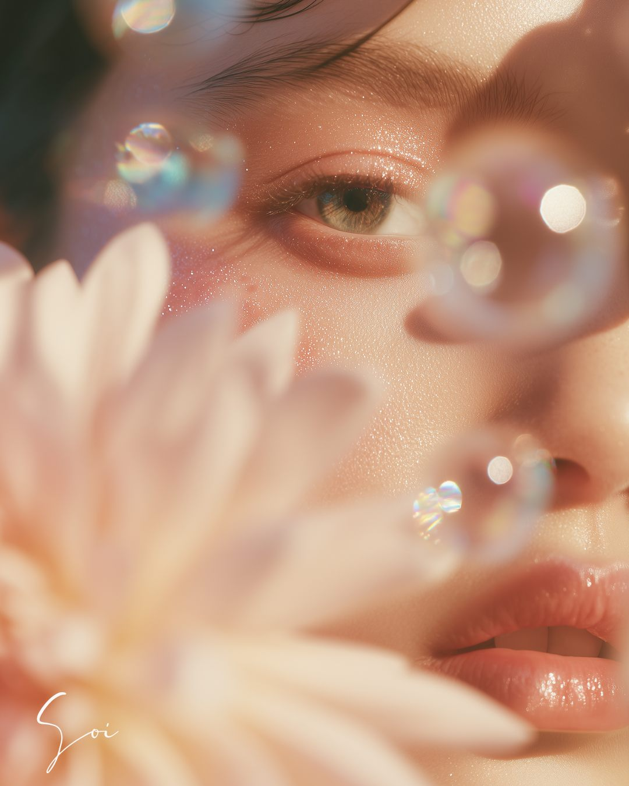
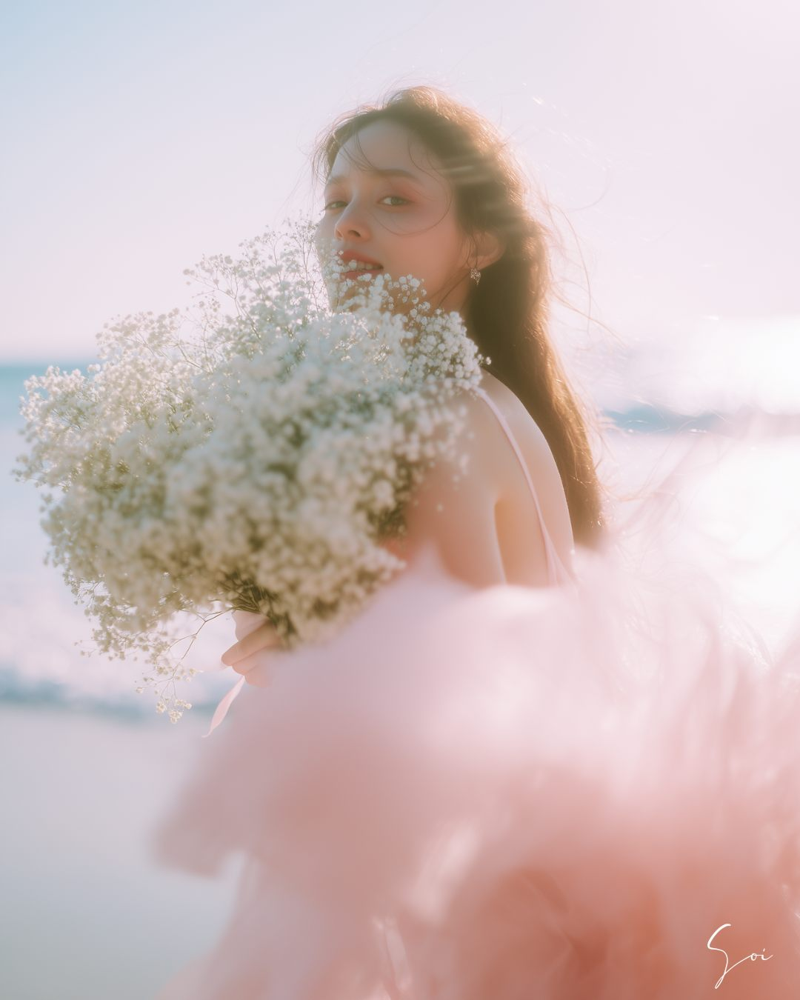

Feelings
こんな夜が、ありませんか。
- AIアート、気になってるけど、何から始めたらいいか分からない。
- Threadsに毎日投稿しているのに、“私らしさ”が見えてこない。
- 人気の投稿を真似してみたけど、なんだかしっくりこない。
- このままだと、“誰でもいい人”のままな気がする。
焦らなくて、大丈夫。
世界観が、ないんじゃない。
まだ、カタチにする方法を
知らないだけ。
World
言葉になった世界観は、こんなふうに形になります。


すべて、実際にわたしが制作した作品です。
Support
5つのステップで、“あなたらしさ”をカタチにします。
-
自分を知る
本当は何が好きで、何に心が動いて、誰を助けたいのか。まずは、あなた自身を知るところから始めます。
-
世界観を言語化する
バラバラだった「好き」を、一本の軸にまとめます。
-
AIアートで可視化する
言葉になった世界観を、AIアートで形にします。操作も一つひとつ丁寧にお伝えするので、はじめてでも大丈夫です。
-
ブランド設計
世界観を、Threads発信の全体に一本の線でつなぎます。
-
選ばれる発信へ
「映える投稿」ではなく、あなただから選ばれる発信へ。
Goal
目指すのは、AI画像が上手になることではありません。「あなただからお願いしたい。」と言われる存在を、隣で伴走しながら一緒に育てていきます。
一緒に作るもの：ブランドコンセプト／世界観キーワード／世界観ボード／ブランドコピー／プロフィール／発信軸／AIアートプロンプト／ブランドガイド／投稿の方向性／商品との導線
Change
発信が、変わります。
Before
- 発信がブレる
- 真似ばかりしてしまう
- 世界観が定まらない
- AI画像は作れるけど自分らしくない
- 誰でもいい存在
After
- 自分らしい軸ができる
- 世界観が統一される
- 発信に迷わない
- AIアートで自分を表現できる
- 「あなたが好き」と言われる
- 「あなたから買いたい」が増える
くわしい内容と料金は、noteに書いています。
Voice
サポート生さんから、こんな声をいただきました。
私は考えることやコンセプトを作ることは好きなのですが、それをデザインとして表現することが苦手でした。
頭の中にぼんやりあった「こんな世界観にしたいな」というイメージが、実際に画像として形になった時は感動しました。
ただ綺麗な画像が作れるだけではなく、自分の発信に愛着が持てるようになったことが、一番の価値でした。私だけの世界観、大好きです。
Profile
わたしのこと。

soi
AIアート×世界観
AIアートに出会って、自分らしさを言葉（プロンプト）にのせて世界観として表現できるようになったとき、心から感動しました。
自分の考えや想いを発信できるようになり、自分を好きになれた。自信をもつことができた。
あのときの感動を、今度はあなたと一緒に見つけにいきたいです。
FAQ
よくあるご質問
AIもMidjourneyも触ったことがありません。それでも大丈夫ですか？
大丈夫です。まったく触れたことのない状態から始める方がほとんどです。
むずかしい言葉は使わず、ひとつずつ噛み砕いて進めていきます。
分からないところは、分かるまで何度でもお聞きください。
絵心もセンスもないのですが、私にもできますか？
センスは必要ありません。ここで作るのは「上手な絵」ではなく「あなたらしさ」だからです。
考えることは好きだけれど表現が苦手、という方こそ力になれます。
どれくらいの期間がかかりますか？忙しくてもできますか？
期間は決めていません。あなたの目標が叶うまで伴走します。
進むペースもお任せいただけるので、急がなくて大丈夫です。
具体的には、何をしてもらえるのでしょうか？
ブランドコンセプト、世界観キーワード、世界観ボード、ブランドコピー、プロフィール、発信軸、AIアートプロンプト、ブランドガイド、投稿の方向性、商品との導線までを一緒に作ります。
くわしい内容はnoteに書いていますので、ぜひ読んでみてください。
InstagramやXの発信サポートもしてもらえますか？
現在は、Threads発信に特化してサポートしています。
InstagramやXは、対象外となります。あらかじめご了承ください。
Start
あなたの世界観を、一緒に咲かせにいきませんか。
「自分に世界観なんてあるのかな」——
そう思っている方にこそ、
来てほしいです。
あなたの中にある“好き”は、
必ずカタチにできます。
サポートの内容とお申し込みは、noteにまとめています。お一人おひとりに深く寄り添いたいので、同時にお受けできる人数はかぎられています。
noteでサポートの詳細を読む